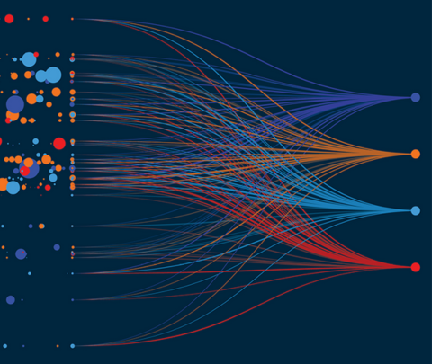
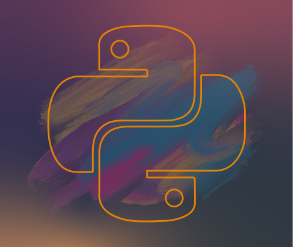

<!DOCTYPE html>
<html lang="eng"></html>

<head>
    <meta charset="UTF=8">
    
    <title>azali_farabi_resume</title>
    <style>
        .center { text-align: center; }
        .image-center { 
            margin-left: auto;
            margin-right: auto;
            display: block;

        }
        .justify {
            text-align: justify;
        }
    </style>

    <h1 class="center">Azali Farabi's Resume</h1>
    

    


</head>
<hr />

<body style="background-color: #021526; color: grey;">
    <h2>Resume</h2>
    <p class="justify">Hi everyone, my name is Azali Farabi and I am bachelor of Mathematics Department at IPB University. 
        In University I took mathematics for modelling as my specialization and this field is really fun for me.
        I actually has some fields to focus on like data science, data engineener, web development, and machine learning.
        In future I want to be a great data scientist to help people or organization to solve their problem scientifically.
        I am so excited on data because with data we can estimate or predict our next step.
        I also like a video editor, but that's just for fun and to share my knowledge and experience visually.
        And last but not least I have some mottos those always motivate me to achieve my goal, <b>just do it</b> and <b>try again</b>.</p>
    <hr />

    <h2>Organizations</h2>
    <h3>Bidik Misi Faculty | Bidik Misi Coordinator of Mathematics and Natural Science Faculty</h3>
    <h4><i>January 2019 - January 2023</i></h4>
    <ul>
        <li>Coordinates for Bidik Misi registration fo each semester MIPA 2019</li>
        <li>Entry Data and reporting for each registration</li>
        <li>PSDM ambassador at IPB Career Preparation from CDA IPB University</li>
    </ul>

    <h3>BEM FMIPA IPB | Staff of Development of Student Resources Department</h3>
    <h4><i>January 2021 - January 2022</i></h4>
    <ul>
        <li>Content creator and video editor for Galery Warta Serasi program</li>
        <li>Designer for PSDM program like LKMM, GARASI, and REGENERASI</li>
        <li>Evaluates and report students progress for each semester</li>
    </ul>

    <h3>G-FAMILY FMIPA IPB | Staff of Mentor Division</h3>
    <h4><i>February 2021 - Mei 2021</i></h4>
    <ul>
        <li>Taught some basics for college department preparation</li>
        <li>Curriculum Developer</li>
        <li>Team Leader</li>
    </ul>
    <hr />

    <h2>Educations</h2>
    <h3>Formal Education</h3>
    <ul>
        <li><b>Bachelor of Mathematics Department at IPB University</b>&nbsp;&nbsp;&nbsp;<i>Jan 2019 - Jul 2024</i></li>
        <p class="justify">During my study at IPB at Mathematics Department exactly I have a concern on machine 
            learning, deep learning, modelling, and data science field. In this case the tools those I 
            often use are Python, NumPy, Pandas, Matplotlib, Seaborn, Cufflinks, Statsmodels, Scikit
            Learn, TensorFlow, and Anaconda.</p>
    </ul>

    <h3>Non-Formal Education</h3>
    <ul>
        <li><b>Python From Zero to Hero</b>&nbsp;&nbsp;&nbsp;<i>Udemy Apr 2021 - Dec 2021</i></li>
        <p>This course taught me about Python in a practical manner, with every lecture comes a full of coding
            screencast and a corresponding code.
        </p>

        <li><b>Machine Learning and Data Science with Python</b>&nbsp;&nbsp;&nbsp;<i>Udemy Apr 2021 - Dec 2023</i></li>
        <p>
            This Comprehensive course guides me to learning how to use the power of Python to
            analyze data, create beatiful visualizations, and use powerfull machine learning algorithms.
        </p>

        <li><b>Machine Learning and Data Science Masterclass</b>&nbsp;&nbsp;&nbsp;<i>Udemy Apr Jan 2021 - August 2023</i></li>
        <p>
            This Course covers advanced machine learning algorithms including advanced
            regularization methods and state of the art unsupervised learning methods, 
            such as DBSCAN.
        </p>

        <li><b>Deep Learning with TensorFlow</b>&nbsp;&nbsp;&nbsp;<i>Udemy Apr 2022 - July 2023</i></li>
        <p>
            For passing TensorFlow Developer Certification Exam by Google, become
            an AI Engineer, Machine Learning, and Deep Learning Expert. I joined this course also.
        </p>

        <li><b>Data Analyst with Python</b>&nbsp;&nbsp;&nbsp;<i>Udemy Apr 2022 - July 2023</i></li>
        <p>
            Since the Data Analyst and other data jobs are relatively new and constantly 
            evolving, this bootcamp want to prepare me to be a good grasp of the 
            Data Analyst role specifically. In this course I also use Python.
        </p>

        <li><b>Statistics for Data Science and Business Analysis </b>&nbsp;&nbsp;&nbsp;<i>Udemy Apr 2021 - July 2022</i></li>
        <p>
            This course acquires the fundamental skills that will enable you to understand complicated 
            statistical analysis directly applicable to real-life situations.
        </p>

        <li><b>Time Series Analysis with Python</b>&nbsp;&nbsp;&nbsp;<i>Udemy Apr 2023 - Apr 2024</i></li>
        <p class="justify">
            This course covering general forecasting models. We'll talk about creating Auto 
            Correlation and Partial Auto Correlation charts and using them in conjunction with 
            powerful ARIMA based models, including Seasonal ARIMA models and SARIMAX to 
            include Exogenous data points.
        </p>

        <li><b>Natural Language Processing with Python</b>&nbsp;&nbsp;&nbsp;<i>Udemy Apr 2023 - Jun 2024</i></li>
        <p class="justify">
            Natural Language Processing, utilizing the Natural Language Toolkit library for Python, as 
            well as the-state-of-the-art Spacy library for ultrafast tokenization, parsing, entity 
            recognition, and lemmatization of text. understand fundamental NLP concepts such as 
            stemming, lemmatization, stop words, phrase matching, tokenization and more!
        </p>

        <li><b>Computer Vision with Python</b>&nbsp;&nbsp;&nbsp;<i>Udemy Apr 2023 - Apr 2024</i></li>
        <p>
            This course exploring how to use Python and the OpenCV (Open Computer Vision) 
            library to analyze images and video data.
        </p>

        <li><b>Version Control System with Git and GitHub</b>&nbsp;&nbsp;&nbsp;<i>Udemy Apr 2023 - Jul 2024</i></li>
        <p class="justify">
            Git is an essential tool for work in any code-related field, from data science to game 
            development to machine learning.  This course covers everything I need to know to start 
            using Git and Github in the real-world today.
        </p>

        <li><b>Advanced Techniques with TensorFlow</b>&nbsp;&nbsp;&nbsp;<i>Coursera Apr 2024 - August 2024</i></li>
        <p class="justify">
            Expand my knowledge of Functional APIs and create exotic non-sequential model types. 
            Learn how to optimize training in different environments with different processors and 
            chip types and be introduced to advanced computer vision scenarios such as object 
            detection, image segmentation, and interpreting convolutions. Explore generative deep 
            learning including how AI can create new content from Style Transfer to Auto Coding, 
            VAE, and GAN.
        </p>

    </ul>
    <h3>Projects</h3>
    <h4>Top Machine Learning Project</h4>
    
    <ul>
        <li>Home Price Prediction</li>
        <li>Recommender System</li>
        <li>Sentiment Analysis</li>
        <li>Jakarta's Air Quality</li>
        <li>Bitcoin Prediction</li>
        <li>Object Detection with Python-TensorFlow</li>
        <li>Heart Failure Prediction</li>
    </ul>

    <h4>Top Data Analysis Project</h4>
    
    <ul>
        <li>Financial Analysis with Python</li>
        <li>CIA Country Analysis and Clustering</li>
        <li>Wholesale Customer Clustering</li>
        <li>Fandango Performance Analysis</li>
        <li>Calls Data Management Project</li>
    </ul>

    <h4>Top Python Developer Projects</h4>
    
    <ul>
        <li>Simple Tic Tac Toe Game</li>
        <li>Black Jack Game</li>
    </ul>
    <hr />

    <h3>Experiences</h3>
    <ol>
        <li>Admin at Rumah Sandar</li>
        <p><i>February 2021 - April 2021</i></p>
        <p>In this event my role as a data entry for the educator of Rumah Sandar and remind them of their schedule.</p>

        <li>Professor Assistant at Mathamtics Modelling</li>
        <p><i>January 2022 - June 2022</i></p>
        <p>My partner and I taught about basic theory deterministic and stochastic modelling and try to 
            simulate that material on to computer.</p>

        <li>Team Leader for KKN IPB at Sapuran, Wonosobo, Central Java</li>
        <p><i>July 2022 - Agustus 2022</i></p>
        <p class="justify">As a student Kuliah Kerja Nyata is the main part for implementing our knowledge and 
            adapted with the real people in village. In this event we develop some programs to 
            improve the village structure and resources.</p>

        <li>Bangkit 2023 Participant</li>
        <p><i>February 2023 - June 2023 </i></p>
        <p class="justify">In this program I got many experiences in programming. This event gives us a milestone 
            in every month for evaluating our learning and the thing I really like is the capstone 
            project like make some machine learning system which force us to build strong team 
            work and active learner in machine learning.</p>
        
        <li>Facilitator for BEM FMIPA x CDA IPB</li>
        <p><i>February 2021 - Mei 2021  </i></p>
        <p class="justify">During my organization in BEM FMIPA IPB 2021, I got a chance as my department 
            delegation to be a facilitator for CDA IPB. In this event we serve some CDA IPB client to 
            get some preparation for the job after bachelor.</p>
    </ol>

    <h3>Skill Summaries</h3>
    <h3>
        <script src="https://cdnjs.cloudflare.com/ajax/libs/font-awesome/6.4.2/js/all.min.js"></script>
        <style>
            .stars {
                color: gold;
            }
        </style>
    </h3>

    <ul>
        <li>Python:
            <span class="stars">
                <i class="fas fa-star"></i>
                <i class="fas fa-star"></i>
                <i class="fas fa-star"></i>
                <i class="fas fa-star"></i>
            </span>
        </li>

        <li>Machine Learning:
            <span class="stars">
                <i class="fas fa-star"></i>
                <i class="fas fa-star"></i>
                <i class="fas fa-star"></i>
                <i class="fas fa-star"></i>
            </span>
        </li>

        <li>Deep Learning:
            <span class="stars">
                <i class="fas fa-star"></i>
                <i class="fas fa-star"></i>
                <i class="fas fa-star"></i>
                <i class="fas fa-star"></i>
            </span>
        </li>
        
        <li>Data Analysis:
            <span class="stars">
                <i class="fas fa-star"></i>
                <i class="fas fa-star"></i>
                <i class="fas fa-star"></i>
                <i class="fas fa-star"></i>
            </span>
        </li>

        <li>Web Development:
            <span class="stars">
                <i class="fas fa-star"></i>
                <i class="fas fa-star"></i>
                <i class="fas fa-star"></i>
            </span>
        </li>

        <li>Communication:
            <span class="stars">
                <i class="fas fa-star"></i>
                <i class="fas fa-star"></i>
                <i class="fas fa-star"></i>
                <i class="fas fa-star"></i>
            </span>
        </li>

        <li>Team Leader:
            <span class="stars">
                <i class="fas fa-star"></i>
                <i class="fas fa-star"></i>
                <i class="fas fa-star"></i>
                <i class="fas fa-star"></i>
            </span>
        </li>

        <li>Analyze:
            <span class="stars">
                <i class="fas fa-star"></i>
                <i class="fas fa-star"></i>
                <i class="fas fa-star"></i>
                <i class="fas fa-star"></i>
            </span>
        </li>
    </ul>

    <hr \>

    <footer>
        &copy; Azali Farabi. Just Do it and Try Again!
    </footer>

    <a href="contact.html">contact me</a>
    
</body>